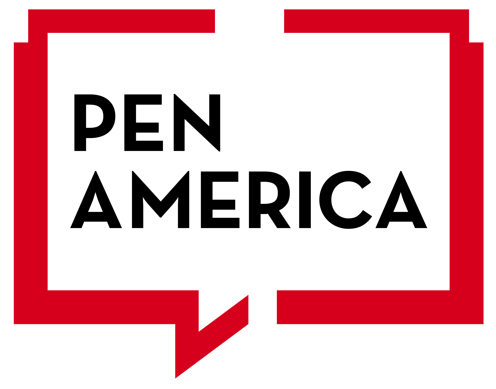

PEN America Type of Partner
This is a short description of the partnership and an overview of the organization.
PEN America Type of Partner
This is a short description of the partnership and an overview of the organization.
pen.org/

Common Ground Committee Type of Partner
This is a short description of the partnership and an overview of the organization.
commongroundcommittee.org/